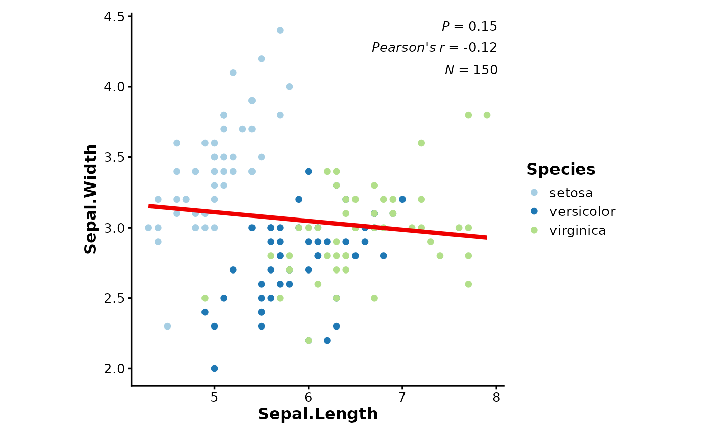
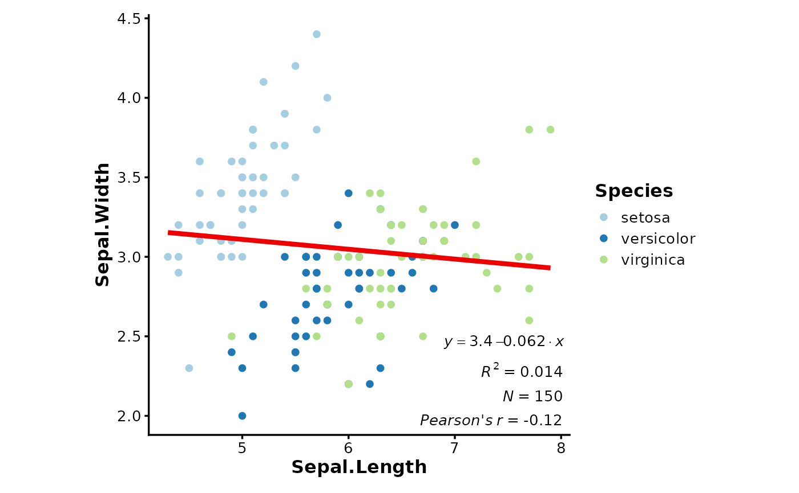
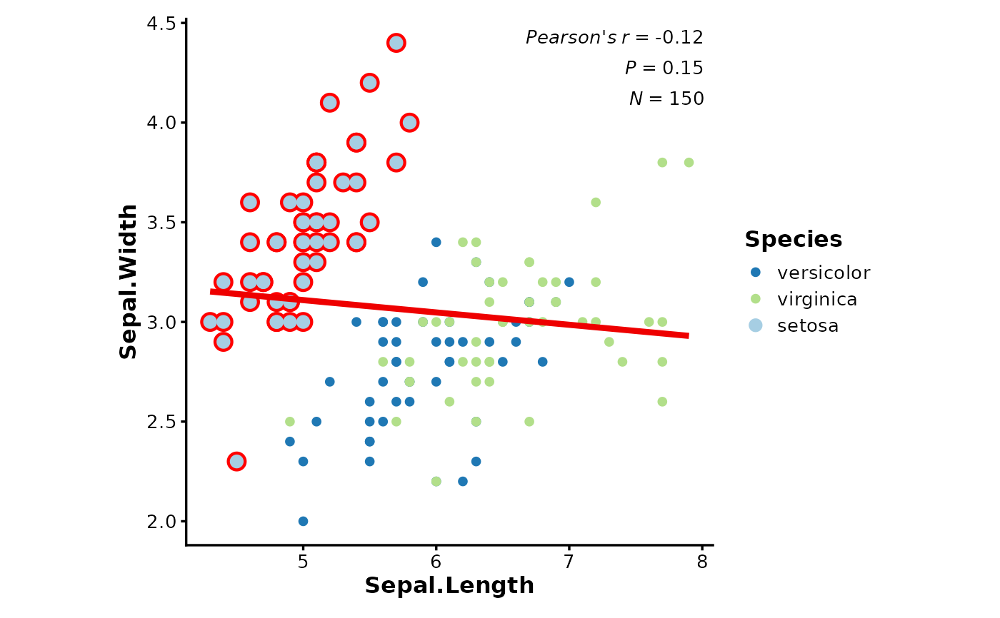
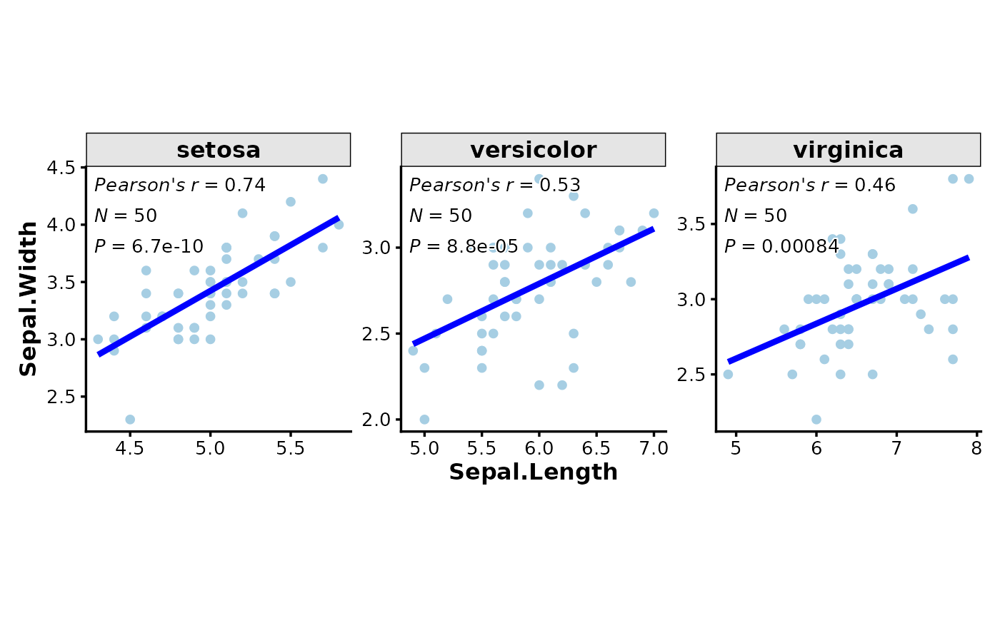
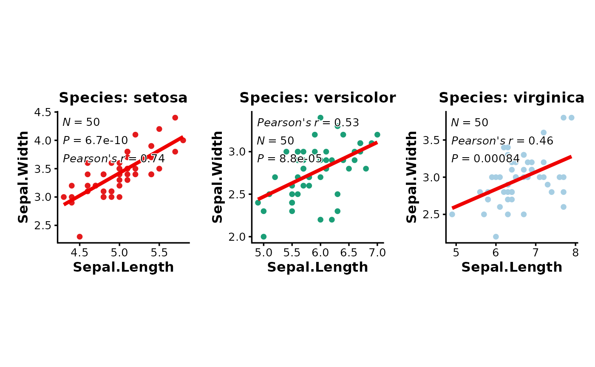

Generate scatter correlation plot for two variables with optional linear regression line, annotations, and highlighting.
Usage
CorPlot(
data,
x,
y,
group_by = NULL,
group_by_sep = "_",
group_name = NULL,
split_by = NULL,
split_by_sep = "_",
pt_size = 2,
pt_shape = 16,
raster = FALSE,
alpha = 1,
raster_dpi = c(512, 512),
highlight = NULL,
highlight_color = "black",
highlight_size = 1,
highlight_alpha = 1,
highlight_stroke = 0.8,
anno_items = c("n", "p", "pearson"),
anno_size = 3.5,
anno_fg = "black",
anno_bg = "white",
anno_bg_r = 0.1,
anno_position = "auto",
add_smooth = TRUE,
smooth_color = "red2",
smooth_width = 1.5,
smooth_se = FALSE,
theme = "theme_ggforge",
theme_args = list(),
palette = "Paired",
palcolor = NULL,
facet_by = NULL,
facet_scales = "fixed",
facet_ncol = NULL,
facet_nrow = NULL,
facet_byrow = TRUE,
aspect.ratio = 1,
legend.position = waiver(),
legend.direction = "vertical",
title = NULL,
subtitle = NULL,
xlab = NULL,
ylab = NULL,
seed = 8525,
combine = TRUE,
nrow = NULL,
ncol = NULL,
byrow = TRUE,
axes = NULL,
axis_titles = NULL,
guides = NULL,
design = NULL,
...
)Arguments
- data
A data frame containing the data to plot
- x
Column name for x-axis variable
- y
Column name for y-axis variable
- group_by
Column name(s) for grouping data
- group_by_sep
Separator when concatenating multiple group_by columns
- group_name
Name for the group legend
- split_by
Column name(s) to split data into multiple plots
- split_by_sep
Separator when concatenating multiple split_by columns
- pt_size
Size of the points
- pt_shape
Shape of the points (0-25)
- raster
Whether to use raster graphics (faster for large datasets)
- alpha
Transparency level (0-1)
- raster_dpi
DPI for raster graphics as c(width, height)
- highlight
Items to highlight. Can be:
A vector of row indices
A vector of rownames
An expression to filter (e.g., "Species == 'setosa'")
- highlight_color
Color for highlighted points
- highlight_size
Size for highlighted points
- highlight_alpha
Alpha for highlighted points
- highlight_stroke
Stroke width for highlighted points
- anno_items
Annotation items to display. Options: "eq", "r2", "p", "spearman", "pearson", "kendall", "n"
- anno_size
Size of annotation text
- anno_fg
Foreground color of annotation text
- anno_bg
Background color of annotation text
- anno_bg_r
Radius of annotation background
- anno_position
Position of annotations. Options: "auto", "topleft", "topright", "bottomleft", "bottomright" (or shortcuts: "tl", "tr", "bl", "br")
- add_smooth
Whether to add linear regression line
- smooth_color
Color of regression line
- smooth_width
Width of regression line
- smooth_se
Whether to show standard error band
- theme
Theme name (string) or theme function
- theme_args
List of arguments passed to theme function
- palette
Color palette name
- palcolor
Custom colors for palette
- facet_by
Column name(s) for faceting the plot
- facet_scales
Scales for facets: "fixed", "free", "free_x", "free_y"
- facet_ncol
Number of columns in facet layout
- facet_nrow
Number of rows in facet layout
- facet_byrow
Fill facets by row (TRUE) or column (FALSE)
- aspect.ratio
Aspect ratio of plot panel
- legend.position
Legend position: "none", "left", "right", "bottom", "top"
- legend.direction
Legend direction: "horizontal" or "vertical"
- title
Plot title
- subtitle
Plot subtitle
- xlab
X-axis label
- ylab
Y-axis label
- seed
Random seed for reproducibility
- combine
Whether to combine split plots into one
- nrow
Number of rows when combining plots
- ncol
Number of columns when combining plots
- byrow
Fill combined plots by row
- axes
How to handle axes in combined plots ("keep", "collect", "collect_x", "collect_y")
- axis_titles
How to handle axis titles in combined plots
- guides
How to handle guides in combined plots ("collect", "keep", "auto")
- design
Custom layout design for combined plots
Examples
# Basic correlation plot with grouping
data(iris)
CorPlot(iris, x = "Sepal.Length", y = "Sepal.Width", group_by = "Species")

# With custom annotations and positioning
CorPlot(iris,
x = "Sepal.Length", y = "Sepal.Width",
group_by = "Species",
anno_items = c("n", "eq", "r2", "pearson"),
anno_position = "bottomright"
)

# With highlighting specific points
CorPlot(iris,
x = "Sepal.Length", y = "Sepal.Width",
group_by = "Species",
highlight = 'Species == "setosa"',
highlight_color = "red",
highlight_size = 3,
highlight_stroke = 1.5
)

# With faceting by groups
CorPlot(iris,
x = "Sepal.Length", y = "Sepal.Width",
facet_by = "Species",
facet_scales = "free",
add_smooth = TRUE,
smooth_color = "blue"
)

# With splitting and custom palettes
CorPlot(iris,
x = "Sepal.Length", y = "Sepal.Width",
split_by = "Species",
palette = c(setosa = "Set1", versicolor = "Dark2", virginica = "Paired"),
combine = TRUE
)

# For large datasets, use raster mode
if (FALSE) { # \dontrun{
CorPlot(large_data,
x = "x_var", y = "y_var",
raster = TRUE,
raster_dpi = c(1024, 1024),
pt_size = 1
)
} # }